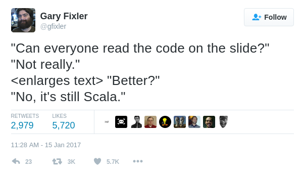
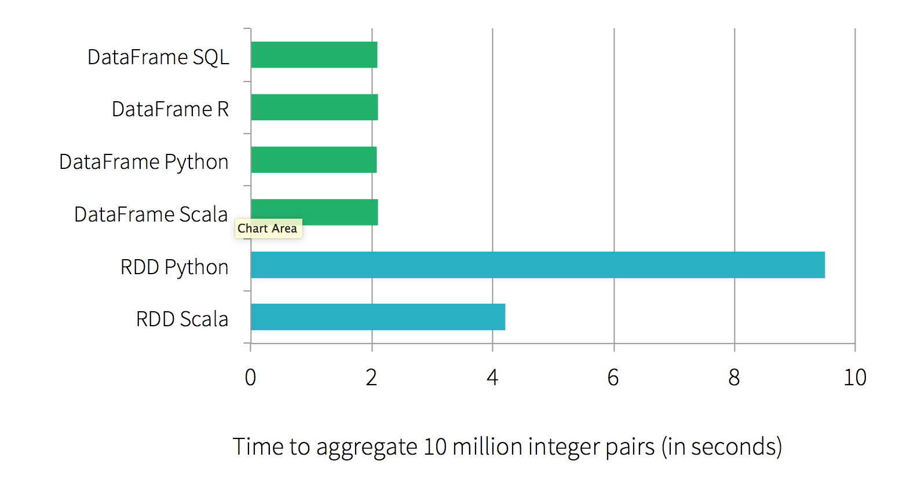

SNOWCAMP
SNOWCAMP
Apache Spark est un système de calcul distribué général haute performance.
Il propose des API haut niveau en Java, Scala, Python et R et contient un moteur d'optimisation générique.
Il contient plusieurs outils tels que Spark SQL pour la gestion de donnée en SQL, MLlib pour le machine learning, GraphX pour le processing de graph et Spark Streaming pour du micro-batching.

C'est très simple de démarrer : notebook Spark en Scala
Le notebook permet
Bref, c'est la classe ...
... et en 2 minutes on trouve pleins de cas d'usages :
... mais on se rend compte qu'on ne sait pas écrire du Scala
... mais surtout, on se rend compte qu'un notebook c'est pratique, mais ce n'est pas très industriel
Il suffit de l'ajouter en dépendance dans Maven
<dependency>
<groupId>org.apache.spark</groupId>
<artifactId>spark-core_2.11</artifactId>
<version>2.0.2</version>
</dependency>
Le 2.11 dans l'artifactId veut dire que Spark a été compilé avec Scala 2.11 (votre cluster Spark devra être démarré avec cette même version, afin d'éviter les problèmes de sérialisation entre les exécuteurs)
Il faut aussi ajouter l'API DataFrame
<dependency>
<groupId>org.apache.spark</groupId>
<artifactId>spark-sql_2.11</artifactId>
<version>2.0.2</version>
</dependency>
Plus ou moins chaque brique s'importe avec une dépendance
Le point d'entré est SparkSession
private static SparkSession spark = SparkSession.builder()
.appName("LesFurets.com - Spark")
.master("local[*]")
.getOrCreate();
public static void main(String[] args) {
spark.emptyDataFrame().show();
}
La machine qui instancie le SparkSession est ce qu'on appelle le driver, il contient le contexte et communique avec le cluster manager afin de lancer les exécutions sur les worker (ou exécuteur).

Apache Spark est un moteur en cluster, et celui-ci se démarre en 3 modes : local, standalone, cluster.
Cela veut dire que le jar contenant votre programme est envoyé par le cluster manager (Standalone, Apache Mesos, Hadoop YARN) aux workers, et les datas sont sérialisés entre les JVM.
Corollaire : les workers n'ont pas directement accès aux variables du driver (ou des autres workers).
Et si on faisait un truc simple ?
"Trouver la moyenne des prix, par formule, pour un assureur"
DEMO TIME ! voir StatistiquesPartenaires
Dataset averagePrime = tarifs
.filter((FilterFunction) value ->
value.getAs("assureur").equals("Mon SUPER assureur"))
.groupBy("formule")
.agg(avg("prime").as("average"))
.withColumn("formuleReadable", callUDF("readableFormule", col("formule")))
.orderBy(desc("average"));
averagePrime.show();
on peut voir le plan exécution, pendant l'exécution, ou après l'exécution avec le history-server, si on active la persitance de l'historique spark.eventLog.enabled
qu'est-ce qu'un Dataset (aussi appelé Dataframe) ?
Un DataFrame est une collection distribuée de data organisée en colonnes nommées et typées. Les exécutions basées sur cette API vont être optimisée par Catalyst.
A partir de notre SparkSession on récupère un Dataset<Row> (soit un DataSet non-typé, appelé DataFrame).
// Lecture d'un fichier data.csv avec inférence de schéma
Dataset<Row> data = spark.read()
.option("inferSchema", true)
.csv("data.csv");
data.printSchema();
root
|-- uid: string (nullable = true)
|-- email_hash: integer (nullable = true)
|-- date: timestamp (nullable = true)
|-- heure: string (nullable = true)
|-- module: string (nullable = true)

On récupère un Dataset tel quel, ou à partir d'un DataFrame typé.
Soit Question un bean java qui correspond à une question du formulaire LesFurets
// Convertion du Dataset<Row> en Dataset<Question>
Dataset<Question> domainData = data
.as(Encoders.bean(Question.class))
À partir de Spark 2.0, SparkSQL, DataFrames and DataSets représentent le même composant

C'est la plomberie interne de spark : on n'y touche pas, sauf si vous avez besoin et vous savez exactement ce que vous faites
// Récupération du RDD sous-jacent au dataset
RDD<Question> rdd = domainData.rdd();
// API Java du RDD
JavaRDD<Question> javaRDD = domainData.javaRDD();
mais l'interface entre les 2 est assez simple
Dataset<Row> dataFrame = spark.createDataFrame(rdd, structType);
TODO whole-stage codegen example
TODO link spark summit conference
et comment on écrit des tests ?
DEMO TIME ! (WordCountTest)
@BeforeEach
public void before() {
// Création des données de test
List rows = Arrays.asList(
RowFactory.create("FORMULE 1", 100d),
RowFactory.create("FORMULE 1", 80d),
RowFactory.create("FORMULE 2", 80d));
// Création du schéma de données
StructField formule = new StructField("formule", StringType, false, Metadata.empty());
StructField prime = new StructField("prime", DoubleType, false, Metadata.empty());
// Récupération du Dataframe de test
tarifs = spark.createDataFrame(rows, new StructType(new StructField[]{formule, prime}));
}
@Test
public void should_calculate_average_by_formule_ordered() {
Dataset averagePrime = StatistiquesPartenaires.averagePrime(tarifs);
assertEquals(2, averagePrime.count());
assertEquals("formule 1", averagePrime.first().getAs("formule"));
assertEquals(90, (double) averagePrime.first().getAs("average"));
}
mais sommes-nous limité en java ?
... oui, un peu
- on s'ennuie du notebook pour le REPL (mais on peut quand même écrire du scala pour prototyper, c'est la même API)
- faut bien connaître l'API (mal) documentée pour Java
- facile de tomber dans des implémentations trop verbeuses pour rien
- on est souvent obligé de passer des sérialiseurs de type (pe Encoders.STRING())
par exemple dans ma première implémentation d'un word count...
Dataset<Row> wordCount = lines
.flatMap((FlatMapFunction<Row, String>) row -> {
String[] words = row.<String>getAs("line").split(" ");
return asList(words).iterator();
}, STRING())
.map((MapFunction<String, Tuple2<String, Integer>>) word ->
new Tuple2<>(word, 1), tuple(STRING(), INT()))
.toDF("word", "count")
.groupBy("word")
.sum("count")
.orderBy(desc("sum(count)"))
... on remarque l'usage de flapMap et map, qui prennent des lambdas (très générique mais un peu verbeux)
... mais ce même word count peut s'écrire de manière beaucoup moins verbeuse en connaissant bien l'API
Dataset<Row> wordCount = lines
.select(split(col("lines"), " ").alias("words"))
.select(explode(col("words")).alias("word"))
.groupBy("word")
.count()
.orderBy(desc("count"));

La plupart des fonctions pour map, flapMap, reduce, filter, etc., dont vous aurez besoin sont dans org.apache.spark.sql.functions
Avant d'écrire une lambda à la main, cherchez dans ce package (non-documenté)
TODO quelques exemples (FlapMapFunction vs functions)
l'API spark n'est pas bien pensée pour les lambdas de Java 8, on est obligé de les caster
par exemple pour récupérer le dernier élément d'un groupe
Dataset<Tuple2<String, TarificationJoin>> tupleTarif =
tarification
.groupByKey((MapFunction<TarificationJoin, String>)
TarificationJoin::getOffreUid, STRING())
.reduceGroups((ReduceFunction<TarificationJoin>) (v1, v2) ->
v1.getSnapshotId().compareTo(v2.getSnapshotId()) > 0 ? v1 : v2);
les casts ne devraient pas être nécessaires, mais le sont parce les méthodes sont "overload" pour les appels en scala
on devrait simplement pouvoir écrire :
Dataset<Tuple2<String, TarificationJoin>> tupleTarif =
tarification
.groupByKey(TarificationJoin::getOffreUid, STRING())
.reduceGroups((v1, v2) ->
v1.getSnapshotId().compareTo(v2.getSnapshotId()) > 0 ? v1 : v2);
il faut aussi passer explicitement les sérialiseurs qui peuvent devenir très complexe dans certains cas
Dataset<Tuple2<String, TarificationJoin>> tupleTarif =
tarification
.groupByKey((MapFunction<TarificationJoin, String>)
TarificationJoin::getOffreUid, STRING())
.reduceGroups((ReduceFunction<TarificationJoin>) (v1, v2) ->
v1.getSnapshotId().compareTo(v2.getSnapshotId()) > 0 ? v1 : v2);
qu'est-ce qu'on a réussi aujourd'hui ?
- versionnement du code : git
- intégration continue : jenkins
- tests unitaires : junit
- utilisation de la code base
- IDE : intellij / eclipse
jenkins ?
- disk / parquet
- cassandra
- ...
todo api diff
Glossary + image on https://spark.apache.org/docs/latest/cluster-overview.html